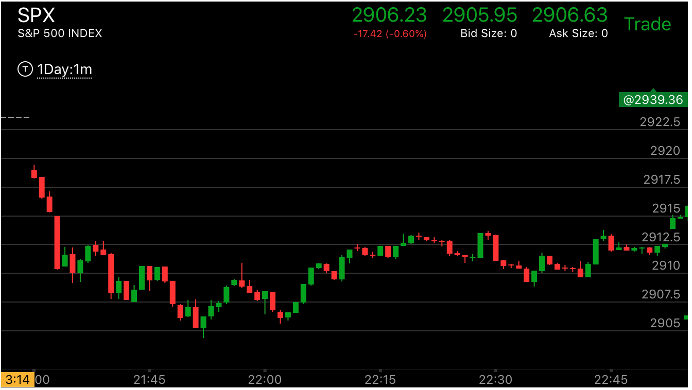
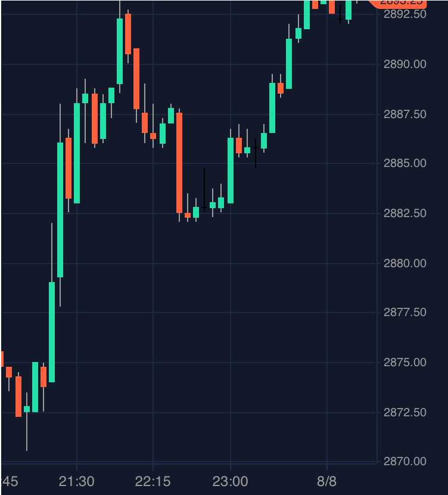

两次加速反转很强的第一浪
- 这个走势，第一浪一定要很强，速度块，幅度大，这样才可以留足够的空间去填补真空。
- 第一浪很强的时候，不一定非要用更大的第二浪来反转，而是可以用两个连续加速来反转。这样，所用的幅度很小就反转了。
- 这样是有道理的，因为一次加速的话，它必须超过第一段的幅度，如果没有超过，那么就不会反转，但是如果再次加速，那么
就反转了。
- 在反向走势当中，第二次加速非常的隐蔽，只有一分钟，而且幅度很小，很快就反转了。
- 可以把两个加速本身看作是一个两段走势，这样前面的很强的第一浪就会反转了。
- 反转后，它至少会超过很强第一浪的起点。有时候，它刚刚超过就，反转了；
但是取决反向运动的样子，它也可能大大超过第一浪的起点。一直运动下去。

图示:开盘后不断下跌。21：40出现了加速下跌。然后21：46出现了第二次加速。21：48稍微反弹后，
再次加速。这样就完成了反转。

图示:2：40开始的下跌，它的下跌不断的出现了加速下跌。但是并没有反转这个走势。
所以这个方法不能乱用。它每次反弹，都没有越过前面的关键点，就下去了。说明没有转折。虽然下跌速度很快。
但是不是转折的方式。

图示：11:20下跌的幅度很大。反弹后，加速下跌。速度快，但是幅度不大。
不够反转。再次大幅反弹后，再次加速下跌。速度很快。这样就用两次反转，反转了这个很大的走势。

图示:21:20是前面2段上涨结束后，第一浪，很强的第一浪。21：30出现了第一次加速。
21：35其实不算加速，因为它越过前面的高点比较慢。但是后面出现了加速。似乎是个两段加速。但是它的第二段没有停留，
而是立刻下跌，也没有出现了再次反弹，而是不断的下跌。然后出现了两端下跌走势。
这样前面的上涨就成了第一段上涨，而这个是回调。要注意22：15的第二段下跌，虽然幅度似乎不如第一段下跌。
但是有两点，它的下跌速度快。幅度和前面非常接近。而且它在底部停留时间很长，比前面的第一段下跌要长。
这样就形成了加速。从前面可看出。前面没有发生两段加速，所以这个走势并没有被反转。而是两段下跌后，继续上涨。

图示:10：30发生上涨后，快速下跌走势。似乎只有一次转折。但是看看前面，它的第一浪是从
10:05开始下跌，几乎拉回原位后，再次下跌，这次下跌跨越前面的低点，速度也快。再次拉回后，快速下跌。
其实也是两次加速。9：50开始的第一浪上涨幅度很大。不容易反转。

图示：可以看它的开盘，它的下跌第一浪很大。幅度大，速度快。但是立刻反弹。
这样让它显得不是那么大了。第二浪比第一浪速度要慢一些，而且幅度也不够大。而且也是立刻反弹。但是它反弹后，
7：00立刻加速下跌，形成了第二次加速.这样就反转了。它虽然从底部立刻起来。但是因为整体走势是升势，所以，
这点也没有关系。而且它反弹的时候，非常的谨慎，7：00刚刚反弹一点，就开始长时间的震荡。然后才缓慢的上涨。

图示：9：50上涨，出现了两段上涨走势，但是仔细观察，它从10：10开始的第二段
上涨走势，没有第一段大。其实没有反转。它下来后，再次上涨。这个上涨速度比下跌要块，这样就形成了加速走势。
两次加速，形成了反转。第一次加速是10：10开始的第二段上涨。

图示：
1. 8:32的下跌是第一浪，它下跌速度很快，8：50第二浪，但是它的幅度不如第一浪。可以说，不能反转。
9:00再次出现了跨越走势后，立刻反弹。9：15再次回到低点。这样。大盘发生了反转，虽然它的第二浪幅度不如第一浪
但是不断的跨越，构成了底部。

图示：开盘后，出现了很强的第一浪下跌，反弹后，再次下跌。加速。但是第二浪的幅度不如第一浪。
不能算反转。它再次反弹后，再次下跌。又一次加速。没有停留的直接越过低点。两次加速就完成了反转。它开始上涨后，
至少会超过开盘的高点。

图示：盘后走势，开盘后大跌，跌幅很大。这个就是第一浪。它后面出现了两次加速下跌。
这样就反转了。虽然两次加速的幅度都不如第一浪幅度。可以看到，它在突破第一浪高点的时候，徘徊了很久。然后大幅上涨。
说明不是刚刚突破就算了。